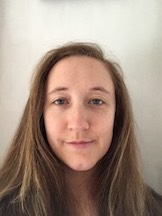

About Me
Claire was born in Boston, MA, and she spent her formative years in the nearby town of Westford. She received her B.A. from Brown University in 2008 and her M.Ed. in Elementary Education from Antioch University in 2011. Claire then went on to teach science at an independent K-8 school in Manhattan. As part of her work, she attended many conferences on STEM topics and became increasingly interested in technology. She began learning to code in her spare time and enrolled in the UMass Amherst coding bootcamp.
Claire is a naturally curious person with many varied interests. She studied French at the Sorbonne and also speaks Spanish, and a little German and Italian. Claire has worked as an organic farmer and artisan baker. She has dabbled in cheesemaking and is an avid artist. She particularly enjoys painting with oils and drawing with pastels.